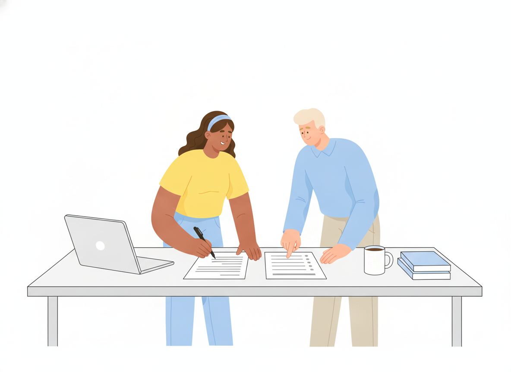
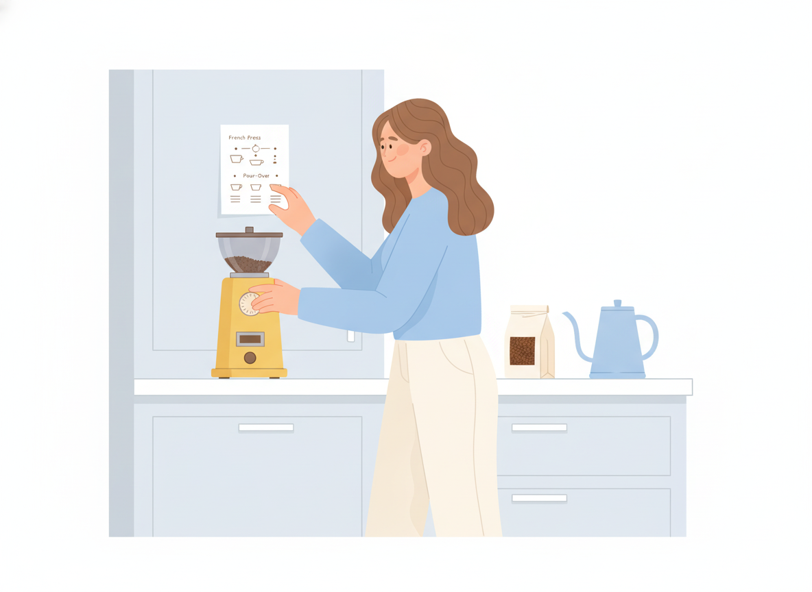

User Manual Examples: What Good Sections Look Like (and Why They Work)
You know your manual needs an introduction, some instructions, and a troubleshooting page. The hard part is knowing what a good version of each one looks like. Templates give you the headings. User manual examples show you the writing.
This guide walks through the core sections of a user manual. Each one has a weak example, a stronger rewrite, and a note on why the rewrite works. The examples use two fictional products, an appointment-booking web app and a countertop coffee grinder, so you can see how the same ideas apply to software and to physical products.

What makes a good user manual example?
A good user manual helps a specific reader finish a specific task with as little effort as possible. Usability research backs this up. The Nielsen Norman Group's well-known heuristic for help and documentation says documentation should be easy to search, show up in context when people need it, and list concrete steps.
The same research group found that most people scan web pages rather than read them word by word. Every example below is built for scanning: clear headings, short paragraphs, and steps you can follow without reading the whole page.
It also helps to know that one manual holds several kinds of content. The Diátaxis framework sorts documentation into four types, each serving a different need:
- Tutorials teach a beginner by walking them through a first success.
- How-to guides help someone who already knows the basics reach a specific goal.
- Reference describes facts, like settings, specifications, and limits.
- Explanation gives background, so readers understand why something works the way it does.
A common problem in weak manuals is mixing these types on one page. The examples below keep them apart, and the same advice applies to user guide examples of any kind.
Example 1: The introduction ("What this manual covers")
The introduction tells readers whether they're in the right place. Many manuals use it to sell the product instead.
Weak example
Welcome to the world's most innovative booking experience! Our powerful platform revolutionizes the way you manage your time.
Stronger example
This manual explains how to set up your booking page, manage appointments, and connect your calendar. It's written for business owners and staff who take bookings. If you're a customer booking an appointment, see Booking an appointment instead.
Why it works: It names the scope, the audience, and where to go if you're the wrong reader. The Write the Docs community lists "discoverable" as a core principle: guide people to the right content through every likely path. A clear introduction is the first of those paths.
Example 2: Getting started (a short tutorial)
Getting started is a tutorial. Its job is to give a new user one early success, not to cover every feature.
Weak example
The Settings panel contains General, Notifications, Integrations, Billing, Team, and Advanced tabs. Each tab has multiple options that can be configured according to your needs.
Stronger example
Take your first booking in 10 minutes
By the end of this section, you'll have a live booking page with one service on it.
- In the left menu, click Services > New service.
- Enter a name, such as 30-minute consultation, and set the length to 30 minutes.
- Click Save. Your service appears on the Services list.
- Click Share booking page and copy the link.
- Open the link in a private browser window and book a test appointment.
Why it works: It promises one concrete outcome and gets there in five steps. A tutorial is a guided lesson that ends with something real to show for it. A tour of every settings tab is reference material, and it belongs later in the manual.
Example 3: A task-based how-to guide
How-to guides are the core of most user manuals. People arrive with a goal and want the shortest path to it.
Weak example
Calendar sync
Calendar sync can be enabled by the user. The Integrations area should be accessed, after which the appropriate calendar provider may be selected and permissions granted.
Stronger example
How to sync your bookings with your calendar
To show new bookings in your calendar automatically, connect your calendar account.
- In the left menu, click Settings > Integrations.
- Under Calendars, click Connect.
- Sign in to your calendar account and click Allow.
New bookings now appear in your calendar within a few minutes.
Why it works: Four fixes are working together here:
- The title says what you'll do. Diátaxis recommends titles that state exactly what the guide shows, such as "How to…", rather than a bare topic name.
- The goal comes before the action. Google's developer documentation style guide suggests starting with the goal ("To show new bookings…") and naming the location before the action ("In the left menu, click…").
- Each step has one action and starts with a verb. That makes steps easy to follow and easy to check off.
- It uses active voice and "you." Digital.gov's plain language guidance points out that active voice makes clear who does what. "Calendar sync can be enabled by the user" hides the reader inside the sentence.
The result line at the end matters too. It tells readers what success looks like, so they know they're done.
Example 4: Reference (settings and specifications)
Reference sections answer "What does this do?" and "What are the limits?" Readers look things up here. They don't read it top to bottom.
Weak example (coffee grinder)
The grinder has lots of settings so you can get the perfect grind for any coffee you like, from espresso all the way to French press, and it can hold quite a lot of beans.
Stronger example
Setting Grind size Best for 1–5 Extra fine Espresso 6–12 Medium Drip and pour-over 13–18 Coarse French press and cold brew Bean hopper capacity: 250 g
Power: 120 V, 60 Hz
Why it works: Diátaxis describes reference as "describe and only describe," and it notes that reference is useful when it's consistent. A table lets readers find their answer in seconds. It should also follow the product's own structure. If the dial reads 1–18, the reference should too.
Note: the grinder settings and specifications above are illustrative and not from a real product.

Example 5: Safety notices and warnings
Physical products often need safety information, and software sometimes needs a warning before an action that can't be undone. The common mistake is overuse.
Weak example
NOTE: Read all instructions. IMPORTANT: Unplug when not in use. WARNING: Blades are sharp. NOTE: Clean regularly. CAUTION: Do not overfill.
Stronger example
Warning: Unplug the grinder before you remove the burrs. The burrs are sharp and can cut you if the motor starts.
Why it works: Google's style guide warns that when a page has many notices, "they begin to lose their visual distinctiveness." Keep warnings for real risks, say what to do, and say what happens if the reader doesn't. Routine tips like "clean regularly" go in the normal text.
The same applies to software. Before a permanent action, one clear warning is better than five generic notes:
Warning: Deleting a service also cancels all future bookings for it. This can't be undone.
If your product is sold in regulated markets, check which safety-message rules apply to it before you publish.
Example 6: Troubleshooting
Good troubleshooting starts from what the reader sees, not from how the product works inside.
Weak example
Troubleshooting
If there are problems with notifications, check your settings, your email provider, and your internet connection, or contact support.
Stronger example
Customers aren't getting confirmation emails
Likely cause: Confirmation emails are turned off for this service.
To fix it:
- Click Services and open the service.
- Under Notifications, turn on Send confirmation email.
- Click Save, then make a test booking to check.
Still not working? Ask your customer to check their spam folder.
Why it works: The heading matches the symptom a reader would search for. Each entry pairs one cause with one fix, and it ends with a next step instead of a dead end. If you want a full structure for this section, see our guide on how to write a troubleshooting guide.
How user manual examples change for web, mobile, and physical products
The principles stay the same across products. The details shift:
- Web applications: Name menus and buttons exactly as they appear, in bold. Add a screenshot only where the screen is hard to describe, and update it when the interface changes.
- Mobile apps: Use "tap" instead of "click," note any difference between platforms, and keep steps short, because readers often switch between the app and the help page.
- Physical products: Lead with safety, setup, and specifications. Diagrams with labeled parts usually do more than paragraphs.
The international standard for user information, ISO/IEC/IEEE 26514, covers documentation across all of these formats. It starts the same way for each one: work out what users need, then decide how to present it.
A quick checklist before you publish
Use this to review any section of your own manual:
- Does the title say what the reader will do or find?
- Is this section one type (tutorial, how-to, reference, or explanation) and not a mix?
- Does each step have one action and start with a verb?
- Did you use "you" and active voice?
- Are warnings reserved for real risks?
- Is everything still accurate for the current version? Write the Docs puts it bluntly: incorrect documentation is worse than missing documentation.
Put these examples to work
The gap between a weak manual and a strong one is rarely about design or length. It comes from many small writing choices: a clearer title, one action per step, one warning instead of five. Pick one section of your manual, find its weak example above, and rewrite it the same way.
If you want a ready-made structure to drop these sections into, start with our user manual template. When you're ready to publish, Sonat lets you write in Google Docs, organize sections into a searchable online manual, and keep it current as your product changes.